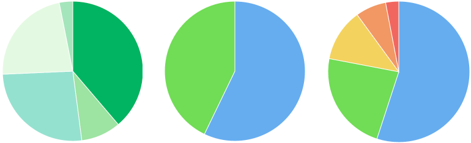
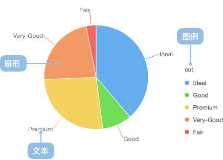

饼图
饼图的简介

饼图广泛得应用在各个领域，用于表示不同分类的占比情况，通过弧度大小来对比各种分类。饼图通过将一个圆饼按照分类的占比划分成多个区块，整个圆饼代表数据的总量，每个区块（圆弧）表示该分类占总体的比例大小，所有区块（圆弧）的加和等于100%。
饼图可以很好地帮助用户快速了解数据的占比分配。它的主要缺点是：
- 饼图不适用于多分类的数据，原则上一张饼图不可多于 9 个分类，因为随着分类的增多，每个切片就会变小，最后导致大小区分不明显，每个切片看上去都差不多大小，这样对于数据的对比是没有什么意义的。所以饼图不适合用于数据量大且分类很多的场景。
- 相比于具备同样功能的其他图表（比如百分比柱状图、环图），饼图需要占据更大的画布空间。
- 很难进行多个饼图之间的数值比较。
尽管如此，在一张饼图上比较一个数据系列上各个分类的大小占比还是很方便高效的。
英文名：Pie chart
饼图的构成

| 图表类型 |
饼图 |
| 适合的数据 |
一个分类数据字段、一个连续数据字段 |
| 功能 |
对比分类数据占比的大小 |
| 数据与图形的映射 |
分类数据字段映射到颜色
连续数据字段映射到饼片的弧度 |
| 适合的数据条数 |
不超过9条数据 |
饼图的应用场景
适合的场景
例子1: 展示 2 个分类的占比情况。下图是一个班级的男女生的占比情况：
gender（性别）|count（人数）
----|---
男|40
女|30
var data = [
{gender:'男',count:40},{gender:'女',count:30}
];
function formatter(text,item){
var point = item.point; // 每个弧度对应的点
var percent = point['..percent']; // ..proportion 字段由Stat.summary.proportion统计函数生成
percent = (percent * 100).toFixed(2) + '%';
return text + ':' + percent;
}
var Stat = G2.Stat;
var chart = new G2.Chart({
id: 'c1',
width : 600,
height : 350
});
chart.source(data);
chart.coord('theta');
chart.tooltip({
title: null // 不显示title
});
chart.intervalStack().position(Stat.summary.percent('count')).color('gender').label('gender',{renderer: formatter});
chart.render();
例子2：多个但不超过 9 个分类的占比情况。下图是一个游戏公司的销售情况：
| genre（游戏类型） |
sold（销售量） |
| Sports |
27,500 |
| Strategy |
11,500 |
| Action |
6,000 |
| Shooter |
3,500 |
| Other |
1,500 |
var data = [
{genre:'Sports',sold:27500},
{genre:'Strategy',sold:11500},
{genre:'Action',sold:6000},
{genre:'Shooter',sold:3500},
{genre:'Other',sold:1500},
];
function formatter(text,item){
var point = item.point; // 每个弧度对应的点
var percent = point['..percent']; // ..proportion 字段由Stat.summary.proportion统计函数生成
percent = (percent * 100).toFixed(2) + '%';
return text + ': ' + percent;
}
var Stat = G2.Stat;
var chart = new G2.Chart({
id: 'c2',
width : 600,
height : 350
});
chart.source(data);
chart.legend('bottom');
chart.coord('theta',{radius: 0.8});
chart.intervalStack().position(Stat.summary.percent('sold')).color('genre').label('genre',{renderer: formatter});
chart.render();
不适合的场景
例子1：分类过多的场景。下图是各个省的人口的占比情况，因为这张图上包含的分类过多，就出现了简介中提到的问题，很难清晰对比各个省份的人口数据占比情况，所以这种情况下，我们推荐使用横向柱状图。
var data = [
{province:'北京市',population:19612368},
{province:'天津市',population:12938693},
{province:'河北省',population:71854210},
{province:'山西省',population:27500},
{"province":"内蒙古自治区","population":24706291},
{"province":"辽宁省","population":43746323},
{"province":"吉林省","population":27452815},
{"province":"黑龙江省","population":38313991},
{"province":"上海市","population":23019196},{"province":"江苏省","population":78660941},
{"province":"浙江省","population":54426891},{"province":"安徽省","population":59500468},
{"province":"福建省","population":36894217},{"province":"江西省","population":44567797},
{"province":"山东省","population":95792719},{"province":"河南省","population":94029939},
{"province":"湖北省","population":57237727},{"province":"湖南省","population":65700762},
{"province":"广东省","population":104320459},{"province":"广西壮族自治区","population":46023761},
{"province":"海南省","population":8671485},{"province":"重庆市","population":28846170},
{"province":"四川省","population":80417528},{"province":"贵州省","population":34748556},
{"province":"云南省","population":45966766},{"province":"西藏自治区","population":3002165},
{"province":"陕西省","population":37327379},{"province":"甘肃省","population":25575263},
{"province":"青海省","population":5626723}
];
var Stat = G2.Stat;
var chart = new G2.Chart({
id : 'c3',
width : 600,
height : 350,
plotCfg: {
margin: 50
}
});
chart.source(data);
chart.coord('theta');
chart.legendVisible('province',false);
chart.intervalStack().position(Stat.summary.percent('population')).color('province').label('province');
chart.render();
例子2: 分类占比差别不明显的场景。下图中游戏公司的不同种类的游戏的销售量相近，所以不太适合使用饼图，此时可以使用柱状图来呈现。
var data = [
{genre:'Sports',sold:15000},
{genre:'Strategy',sold:14900},
{genre:'Action',sold:15050},
{genre:'Shooter',sold:13000},
{genre:'Other',sold:13900}
];
function formatter(text,item){
var point = item.point; // 每个弧度对应的点
var percent = point['..percent']; // ..proportion 字段由Stat.summary.proportion统计函数生成
percent = (percent * 100).toFixed(2) + '%';
return percent;
}
var Stat = G2.Stat;
var chart = new G2.Chart({
id: 'c4',
width : 600,
height : 350
});
chart.source(data);
chart.coord('theta',{radius: 0.8});
chart.legend('bottom');
chart.intervalStack().position(Stat.summary.percent('sold')).color('genre');
chart.render();
饼图与其他图表的对比
- 饼图主要是展示分类之间的占比情况。
- 而柱状图主要展示各个分类数量、大小的对比。
- 饼图通过弧度的大小来对比数据。
- 南丁格尔图通过半径的大小来对比数据。
变型
标签
实现
G2